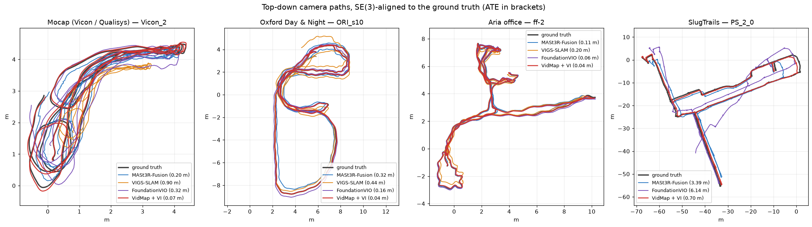
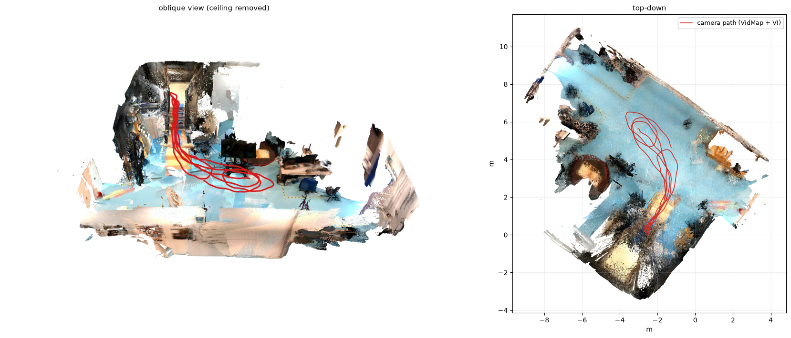
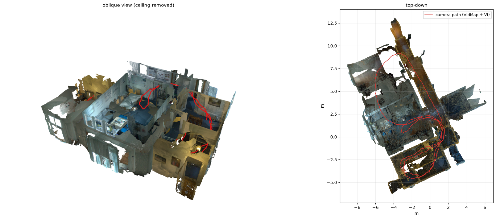
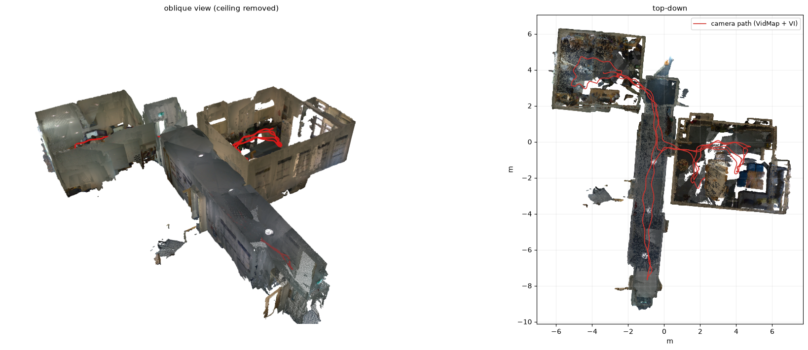
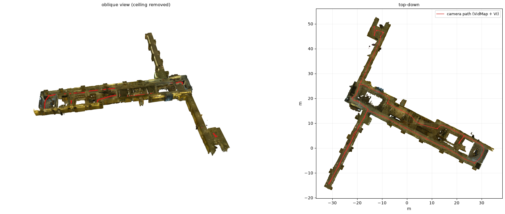

Metric trajectories and maps from egocentric video + IMU — validation
How accurate are the camera trajectories, and the maps built from them? 66 trials on four datasets, against motion capture, Aria MPS and building floor plans.
Pipeline
The validation pipeline. Pupil Labs Neon glasses and three IMUs (pelvis, left and right foot) are calibrated and time-synchronised. The SLAM module has two paths: visual-inertial SLAM gives a metric trajectory by itself; video-only SLAM (dashed: no IMU, scale unknown) is refined by EPO and then made metric by our IMU pre-integration and VI factor graph (red) – the dotted box marks the steps applied to the video-only models only. Every trajectory is compared with ground truth. The eye-tracking and biomechanical branches are greyed out (not validated here). The overall pipeline, including ScaRF-SLAM’s dense depth fusion into a metric point cloud, is in the Neon-IMU-Pipeline repository.
ScaRF-SLAM maps building up along our VidMap + VI trajectories, one trial per dataset (camera frame top right). Each point appears when the camera first sees it.
Metrics
Every trajectory is compared with the ground truth on the frames matched by timestamp (±20 ms). Models that use the IMU should be metric, so they are aligned rigidly (SE(3), scale fixed at 1); the video-only models have an arbitrary scale and are aligned with a fitted scale (Sim(3), marked †).
- ATE (absolute trajectory error): RMSE of the camera-position error after aligning the whole trajectory (Umeyama) —
evo. Rotation error: RMSE of the orientation error after the same alignment. - W-AUC (windowed AUC), as proposed in VidMap and computed with its evaluator.
- How. For every frame, a window of W metres of path is centred on it; the trajectory is aligned to the ground truth using only the frames in that window, and the centre frame's translation error is kept — the windowed translation error. W-AUC is the area under the cumulative curve of these per-frame errors (the fraction of frames with error ≤ t, for t from 0 up to 5 % of W), as a percentage: 100 % if every frame is exact, 0 % if none is within 5 % of W. W = 10, 25, 50 and 100 m, and the full trajectory (threshold 5 % of its length).
- Why. On a long trajectory a single global alignment is dominated by long-range drift, which can hide how good the trajectory is locally. W-AUC measures the error after local alignment, so it is better suited to long videos — here up to 500 m.
- Our change. VidMap aligns each window with Sim(3). We keep that for the video-only models (†) but use SE(3) for the models that use the IMU, so that a local scale error counts against them.
- RPE 1 m (relative pose error), as in FoundationVIO: the error of the motion between poses 1 m of path apart, with no alignment and no scale correction — the metric drift per metre walked (translation m/m, rotation deg/m), RMSE —
evo. Models that use the IMU only.
Datasets
| dataset | recordings | sensor (as given to every model) | ground truth | trials | path per trial | source |
|---|---|---|---|---|---|---|
| Mocap (Vicon / Qualisys) | Own recordings: Pupil Labs Neon glasses, Vicon and Qualisys motion-capture rooms | Neon scene camera + IMU (~110 Hz) | motion-capture pose of the glasses × camera extrinsic | 6 | 34–58 m (median 44 m) | this work |
| Oxford Day & Night | Oxford Day & Night, Robotics Institute: 21 sessions in daylight and at night | Project Aria (rendered as a Neon camera); IMU 1 kHz and 110 Hz | multi-session MPS (self-consistent to ~0.5 cm) | 42 | 31–213 m (median 90 m) | Oxford Day and Night (CC BY 4.0) |
| Aria office | Aria office: 6 recordings (ff-1…3, gf-1…3) | Project Aria (rendered as a Neon camera); IMU 1 kHz and 110 Hz | single-session MPS | 12 | 29–90 m (median 55 m) | Aria Office dataset (released with FoundationVIO) |
| SlugTrails | SlugTrails: 6 floors of 3 university buildings | Project Aria (rendered as a Neon camera); IMU 1 kHz | single-session MPS; and their laser-anchored floor-plan positions (~0.15 m) | 6 | 221–336 m (median 315 m) | SlugTrails 1.0, Cheng & Manduchi (CC BY 4.0) |
The Aria recordings are rendered as if a Neon scene camera had recorded them (same position and orientation, Neon's lens), so every model sees the same kind of input as on the Neon glasses; the 110 Hz variant is Aria's IMU averaged down to Neon's rate.
Models
| model | what it is | alignment to the ground truth |
|---|---|---|
| MASt3R-Fusion | visual-inertial SLAM (baseline) | SE(3) |
| VIGS-SLAM | visual-inertial Gaussian-splatting SLAM (baseline) | SE(3) |
| FoundationVIO | visual-inertial odometry with a geometry foundation model and loop closure (baseline) | SE(3) |
| VidMap | video-only SLAM / mapping | Sim(3) † |
| LingBot-Map | video-only streaming reconstruction | Sim(3) † |
| + EPO | edge-based pose refinement of the video-only trajectory | Sim(3) † |
| + VI (ours) | IMU pre-integration + VI factor graph re-optimising the video poses (metric scale, gravity) | SE(3) |
| + VIS (ours) | the video poses at the VI graph's metric scale, interpolated to every frame | SE(3) |
Details of our + VI and + VIS methods will be added here after publication.
Results
Summary. Whilst the visual-inertial baselines perform well, VidMap + VI performs consistently well: of the models that use the IMU, it has the lowest ATE on mocap, Oxford and Aria office (MASt3R-Fusion is lower on SlugTrails) and the lowest drift per metre (RPE 1 m) on all four datasets. It is also the most robust: its ATE stays below 2 % of the path in all but one of the 66 trials.
ATE — absolute trajectory error (m, RMSE)
| model | Mocap (Vicon / Qualisys) | Oxford Day & Night | Aria office | SlugTrails |
|---|---|---|---|---|
| MASt3R-Fusion | 0.166 | 0.277 | 0.111 | 3.421 |
| VIGS-SLAM | 0.637 | 5.225 | 0.602 | – |
| FoundationVIO | 0.590 | 0.569 | 0.067 | 4.672 |
| VidMap † | 0.055 | 0.175 | 0.017 | 3.276 |
| VidMap + EPO † | 0.048 | 0.188 | 0.030 | 3.386 |
| VidMap + VI | 0.082 | 0.201 | 0.048 | 3.863 |
| VidMap + EPO + VI | 0.088 | 0.550 | 0.085 | 25.888 |
| VidMap + VIS | 0.065 | 0.207 | 0.039 | 3.507 |
| LingBot-Map † | 0.248 | 2.310 | 0.344 | – |
| LingBot-Map + EPO † | 0.277 | 2.439 | 0.327 | – |
| LingBot-Map + VI | 0.273 | 2.654 | 0.592 | – |
| LingBot-Map + EPO + VI | 0.321 | 5.247 | 0.640 | – |
| LingBot-Map + VIS | 0.303 | 2.802 | 0.686 | – |
Median over trials; Aria datasets include both IMU rates (FoundationVIO: 1 kHz only). Best per dataset in bold; – = not run. Shaded rows: our VI factor graph (+ VI / + VIS). SE(3) alignment (scale fixed at 1) for the models that use the IMU; † Sim(3) (scale fitted) for the video-only models, whose scale is arbitrary.
Robustness — trials with ATE below 2 % of the path (%, higher is better)
| model | Mocap (Vicon / Qualisys) | Oxford Day & Night | Aria office | SlugTrails |
|---|---|---|---|---|
| MASt3R-Fusion | 100 | 98 | 100 | 83 |
| VIGS-SLAM | 83 | 36 | 50 | – |
| FoundationVIO | 83 | 95 | 100 | 50 |
| VidMap † | 100 | 95 | 100 | 83 |
| VidMap + EPO † | 100 | 95 | 100 | 83 |
| VidMap + VI | 100 | 100 | 100 | 83 |
| VidMap + EPO + VI | 100 | 100 | 100 | 0 |
| VidMap + VIS | 100 | 95 | 100 | 83 |
| LingBot-Map † | 100 | 52 | 83 | – |
| LingBot-Map + EPO † | 100 | 52 | 83 | – |
| LingBot-Map + VI | 100 | 48 | 100 | – |
| LingBot-Map + EPO + VI | 100 | 5 | 100 | – |
| LingBot-Map + VIS | 100 | 33 | 67 | – |
Share of trials where the trajectory stays within 2 % of the path length (ATE as above, so 1 m on a 50 m walk); a trial that blows up counts as a failure. Medians hide blow-ups; this table and the next show them. Shaded rows: ours.
Worst trial — ATE as % of the path (lower is better)
| model | Mocap (Vicon / Qualisys) | Oxford Day & Night | Aria office | SlugTrails |
|---|---|---|---|---|
| MASt3R-Fusion | 0.8 | 10.0 | 0.6 | 2.9 |
| VIGS-SLAM | 2.1 | >100 | 6.0 | – |
| FoundationVIO | 2.1 | 2.8 | 0.4 | 8.6 |
| VidMap † | 0.2 | 4.5 | 0.1 | 6.0 |
| VidMap + EPO † | 0.2 | 4.6 | 0.1 | 6.0 |
| VidMap + VI | 0.3 | 1.1 | 0.1 | 5.3 |
| VidMap + EPO + VI | 0.3 | 1.3 | 0.2 | 10.5 |
| VidMap + VIS | 0.2 | 4.6 | 0.1 | 6.0 |
| LingBot-Map † | 0.6 | 6.5 | 2.0 | – |
| LingBot-Map + EPO † | 0.7 | 6.3 | 2.0 | – |
| LingBot-Map + VI | 0.9 | 13.9 | 2.0 | – |
| LingBot-Map + EPO + VI | 1.1 | 12.4 | 1.8 | – |
| LingBot-Map + VIS | 1.0 | 6.9 | 2.0 | – |
Maximum over the trials of each dataset; >100 = diverged. Shaded rows: ours.
Rotation error (deg, RMSE, after the same alignment)
| model | Mocap (Vicon / Qualisys) | Oxford Day & Night | Aria office | SlugTrails |
|---|---|---|---|---|
| MASt3R-Fusion | 2.22 | 1.51 | 0.90 | 3.93 |
| VIGS-SLAM | 2.22 | 94.48 | 0.44 | – |
| FoundationVIO | 12.81 | 3.28 | 0.86 | 11.98 |
| VidMap † | 2.25 | 1.71 | 0.33 | 10.51 |
| VidMap + EPO † | 2.33 | 1.69 | 0.40 | 10.61 |
| VidMap + VI | 2.42 | 1.15 | 0.44 | 10.09 |
| VidMap + EPO + VI | 2.38 | 1.27 | 0.45 | 15.48 |
| VidMap + VIS | 2.51 | 2.30 | 2.05 | 10.73 |
| LingBot-Map † | 2.72 | 29.35 | 2.56 | – |
| LingBot-Map + EPO † | 2.73 | 29.30 | 2.39 | – |
| LingBot-Map + VI | 2.12 | 4.55 | 2.29 | – |
| LingBot-Map + EPO + VI | 2.80 | 7.98 | 2.04 | – |
| LingBot-Map + VIS | 2.72 | 29.35 | 2.56 | – |
Median over trials; Aria datasets include both IMU rates (FoundationVIO: 1 kHz only). Best per dataset in bold; – = not run. Shaded rows: our VI factor graph (+ VI / + VIS). The alignment is fitted on positions only, so slow heading drift along a long walk shows up here in full: on SlugTrails (~300 m per floor) a few trials drift by 10–20° (or diverge), and with six trials the median lands on them. Locally the rotation is accurate (see the RPE rotation table below).
W-AUC over 10 m windows (%, higher is better)
| model | Mocap (Vicon / Qualisys) | Oxford Day & Night | Aria office | SlugTrails |
|---|---|---|---|---|
| MASt3R-Fusion | 77.5 | 87.9 | 90.8 | 74.3 |
| VIGS-SLAM | 16.2 | 17.9 | 62.1 | – |
| FoundationVIO | 66.1 | 88.6 | 95.1 | 83.6 |
| VidMap † | 93.2 | 94.4 | 98.2 | 93.9 |
| VidMap + EPO † | 92.7 | 89.8 | 96.9 | 26.8 |
| VidMap + VI | 91.8 | 93.9 | 97.5 | 92.7 |
| VidMap + EPO + VI | 90.7 | 84.0 | 95.4 | 26.9 |
| VidMap + VIS | 91.8 | 92.4 | 96.3 | 89.9 |
| LingBot-Map † | 79.7 | 59.5 | 81.6 | – |
| LingBot-Map + EPO † | 76.1 | 33.3 | 83.3 | – |
| LingBot-Map + VI | 73.0 | 37.6 | 60.9 | – |
| LingBot-Map + EPO + VI | 68.3 | 11.9 | 70.3 | – |
| LingBot-Map + VIS | 68.3 | 36.2 | 58.3 | – |
Median over trials; Aria datasets include both IMU rates (FoundationVIO: 1 kHz only). Best per dataset in bold; – = not run. Shaded rows: our VI factor graph (+ VI / + VIS). Windowed translation error with 10 m windows (SE(3), or Sim(3) †), AUC up to 0.5 m (5 % of the window); see Metrics.
W-AUC over 25 m windows (%, higher is better)
| model | Mocap (Vicon / Qualisys) | Oxford Day & Night | Aria office | SlugTrails |
|---|---|---|---|---|
| MASt3R-Fusion | 88.8 | 91.3 | 94.0 | 67.1 |
| VIGS-SLAM | 52.3 | 4.1 | 64.0 | – |
| FoundationVIO | 71.5 | 87.2 | 96.6 | 80.7 |
| VidMap † | 96.8 | 95.6 | 98.9 | 93.2 |
| VidMap + EPO † | 96.8 | 93.8 | 98.1 | 37.6 |
| VidMap + VI | 95.0 | 93.4 | 98.2 | 91.0 |
| VidMap + EPO + VI | 94.7 | 83.2 | 95.1 | 16.9 |
| VidMap + VIS | 96.2 | 92.9 | 97.8 | 88.8 |
| LingBot-Map † | 88.2 | 62.1 | 86.3 | – |
| LingBot-Map + EPO † | 86.4 | 48.9 | 88.0 | – |
| LingBot-Map + VI | 83.2 | 32.5 | 64.4 | – |
| LingBot-Map + EPO + VI | 81.1 | 8.9 | 67.3 | – |
| LingBot-Map + VIS | 81.3 | 34.7 | 65.1 | – |
Median over trials; Aria datasets include both IMU rates (FoundationVIO: 1 kHz only). Best per dataset in bold; – = not run. Shaded rows: our VI factor graph (+ VI / + VIS). As above, windows of 25 m, threshold 1.25 m.
RPE over 1 m — translation (m/m, RMSE)
| model | Mocap (Vicon / Qualisys) | Oxford Day & Night | Aria office | SlugTrails |
|---|---|---|---|---|
| MASt3R-Fusion | 0.121 | 0.071 | 0.054 | 0.445 |
| VIGS-SLAM | 0.491 | 1.239 | 0.193 | – |
| FoundationVIO | 0.160 | 0.056 | 0.024 | 0.156 |
| VidMap + VI | 0.049 | 0.036 | 0.012 | 0.055 |
| VidMap + EPO + VI | 0.050 | 0.080 | 0.022 | 3.143 |
| VidMap + VIS | 0.059 | 0.047 | 0.037 | 0.089 |
| LingBot-Map + VI | 0.108 | 0.551 | 0.178 | – |
| LingBot-Map + EPO + VI | 0.130 | 1.214 | 0.152 | – |
| LingBot-Map + VIS | 0.149 | 0.432 | 0.203 | – |
Median over trials; Aria datasets include both IMU rates (FoundationVIO: 1 kHz only). Best per dataset in bold; – = not run. Shaded rows: our VI factor graph (+ VI / + VIS). As FoundationVIO: pose pairs 1 m of path apart, no alignment and no scale correction — the metric drift per metre walked. Models that use the IMU only.
RPE over 1 m — rotation (deg/m, RMSE)
| model | Mocap (Vicon / Qualisys) | Oxford Day & Night | Aria office | SlugTrails |
|---|---|---|---|---|
| MASt3R-Fusion | 1.94 | 0.46 | 0.39 | 3.19 |
| VIGS-SLAM | 2.49 | 4.45 | 0.23 | – |
| FoundationVIO | 3.38 | 0.33 | 0.28 | 0.46 |
| VidMap + VI | 1.29 | 0.47 | 0.33 | 0.41 |
| VidMap + EPO + VI | 1.31 | 0.46 | 0.34 | 1.09 |
| VidMap + VIS | 2.58 | 2.59 | 2.60 | 3.57 |
| LingBot-Map + VI | 1.24 | 0.68 | 0.41 | – |
| LingBot-Map + EPO + VI | 1.37 | 1.17 | 0.39 | – |
| LingBot-Map + VIS | 2.22 | 6.78 | 1.55 | – |
Median over trials; Aria datasets include both IMU rates (FoundationVIO: 1 kHz only). Best per dataset in bold; – = not run. Shaded rows: our VI factor graph (+ VI / + VIS).
Ablations
IMU rate: 1 kHz vs 110 Hz
The same Aria recordings with the IMU at its native ~1 kHz and averaged down to Neon's 110 Hz (Oxford and Aria office, the recordings run at both rates).
| model | recordings | ATE (m) 1 kHz | ATE (m) 110 Hz | 1 kHz better | RPE 1 m (m/m) 1 kHz | RPE 1 m (m/m) 110 Hz | 1 kHz better |
|---|---|---|---|---|---|---|---|
| MASt3R-Fusion | 27 | 0.258 | 0.234 | 9/27 | 0.067 | 0.070 | 11/27 |
| VIGS-SLAM | 27 | 3.281 | 1.534 | 12/27 | 0.808 | 0.454 | 17/27 |
| VidMap + VI | 27 | 0.143 | 0.148 | 16/27 | 0.029 | 0.032 | 24/27 |
| VidMap + EPO + VI | 27 | 0.544 | 0.533 | 13/27 | 0.074 | 0.074 | 22/27 |
| VidMap + VIS | 27 | 0.122 | 0.122 | 12/27 | 0.044 | 0.044 | 13/27 |
| LingBot-Map + VI | 27 | 2.254 | 2.265 | 20/27 | 0.355 | 0.352 | 21/27 |
| LingBot-Map + EPO + VI | 27 | 4.795 | 4.792 | 19/27 | 1.083 | 1.085 | 19/27 |
| LingBot-Map + VIS | 27 | 2.439 | 2.453 | 18/27 | 0.398 | 0.392 | 12/27 |
Median over recordings; "1 kHz better": recordings where the 1 kHz run has the lower error. FoundationVIO was run at 1 kHz only.
EPO refinement: without vs with
| without → with EPO | Mocap (Vicon / Qualisys) | Oxford Day & Night | Aria office | SlugTrails | EPO better |
|---|---|---|---|---|---|
| VidMap † → + EPO | 0.055 → 0.048 | 0.175 → 0.188 | 0.017 → 0.030 | 3.276 → 3.386 | 7/66 |
| VidMap + VI → + EPO | 0.082 → 0.088 | 0.201 → 0.550 | 0.048 → 0.085 | 3.863 → 25.888 | 8/66 |
| VidMap + VIS → + EPO | 0.065 → 0.071 | 0.207 → 0.589 | 0.039 → 0.090 | 3.507 → 26.511 | 8/66 |
| LingBot-Map † → + EPO | 0.248 → 0.277 | 2.310 → 2.439 | 0.344 → 0.327 | – | 15/60 |
| LingBot-Map + VI → + EPO | 0.273 → 0.321 | 2.654 → 5.247 | 0.592 → 0.640 | – | 15/60 |
| LingBot-Map + VIS → + EPO | 0.303 → 0.343 | 2.802 → 5.360 | 0.686 → 0.604 | – | 15/60 |
ATE (m), median over trials per dataset, with the alignment of the table above (Sim(3) † for the video-only trajectories, SE(3) once the IMU is added); "EPO better": trials (all datasets) where the EPO-refined trajectory has the lower ATE.
Trajectories

ScaRF-SLAM maps
Dense maps from ScaRF-SLAM given our VidMap + VI trajectories (one trial per dataset): straight walls and single copies of surfaces mean the trajectory is consistent in metric scale.
Mocap (Vicon / Qualisys) — Vicon_2

8.3 M points at 1 cm voxels (shown at 3 cm), 50 m of camera path; poses from VidMap + VI.
Oxford Day & Night — ORI_s10

9.9 M points at 1 cm voxels (shown at 3 cm), 73 m of camera path; poses from VidMap + VI.
Aria office — ff-2

9.4 M points at 1 cm voxels (shown at 3 cm), 71 m of camera path; poses from VidMap + VI.
SlugTrails — PS_2_0

58.9 M points at 1 cm voxels (shown at 3 cm), 285 m of camera path; poses from VidMap + VI.
Floor-plan check (SlugTrails)
SlugTrails also provides positions anchored to laser-measured markers on the building floor plans (~0.15 m), independent of Aria MPS. Position-only ATE against them, including Aria's own MPS:
| trajectory | ATE SE(3) (m) | ATE Sim(3) (m) | Sim(3) scale |
|---|---|---|---|
| Aria MPS (the ground truth above) | 0.243 | 0.145 | 1.006 |
| MASt3R-Fusion | 3.529 | 2.509 | 1.071 |
| FoundationVIO | 4.786 | 4.691 | 1.013 |
| VidMap † | 3.878 | 3.252 | 1.037 |
| VidMap + EPO † | 3.974 | 3.365 | 1.025 |
| VidMap + VI | 3.804 | 3.073 | 1.014 |
| VidMap + EPO + VI | 26.083 | 11.058 | 42.031 |
| VidMap + VIS | 3.563 | 3.143 | 1.022 |